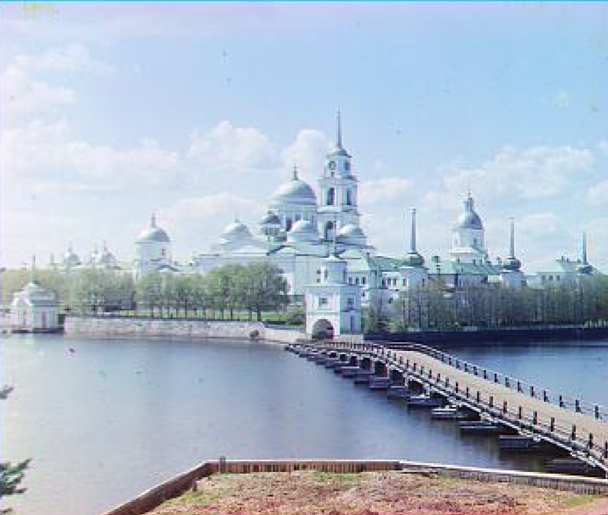
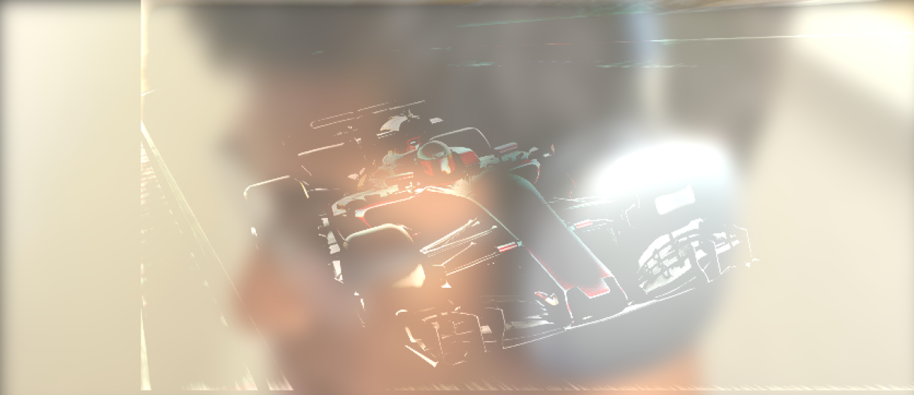
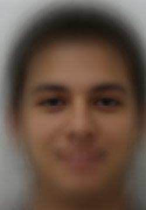
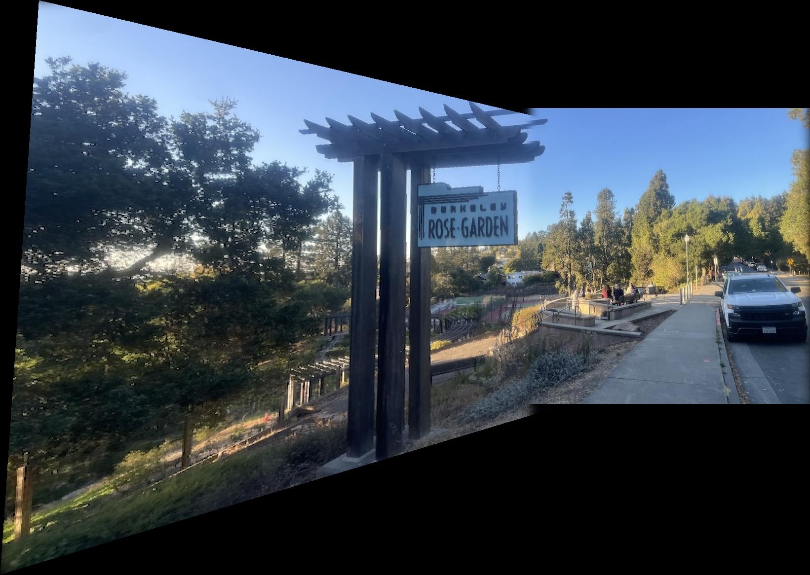
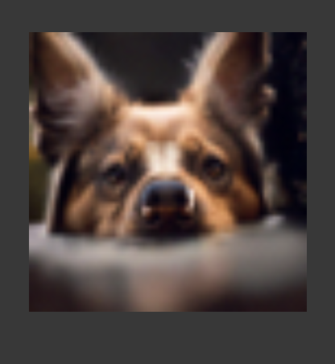
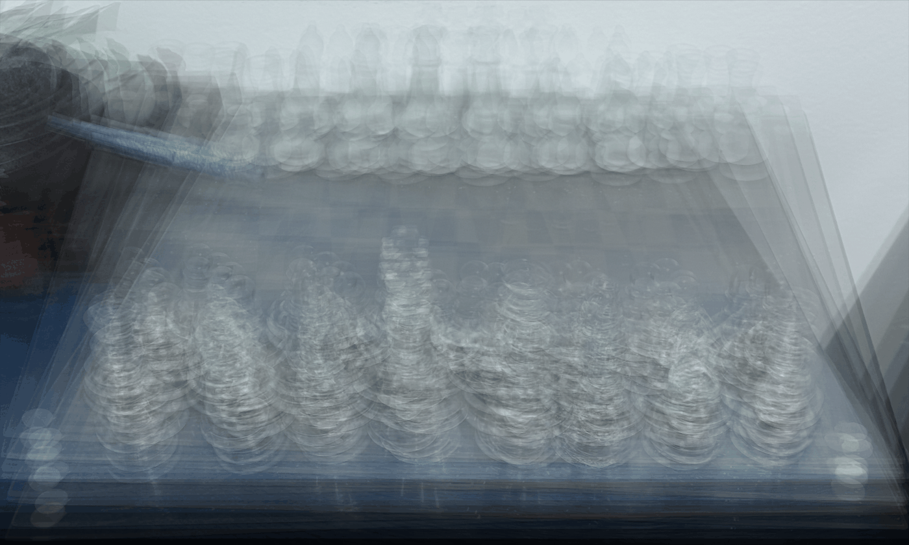
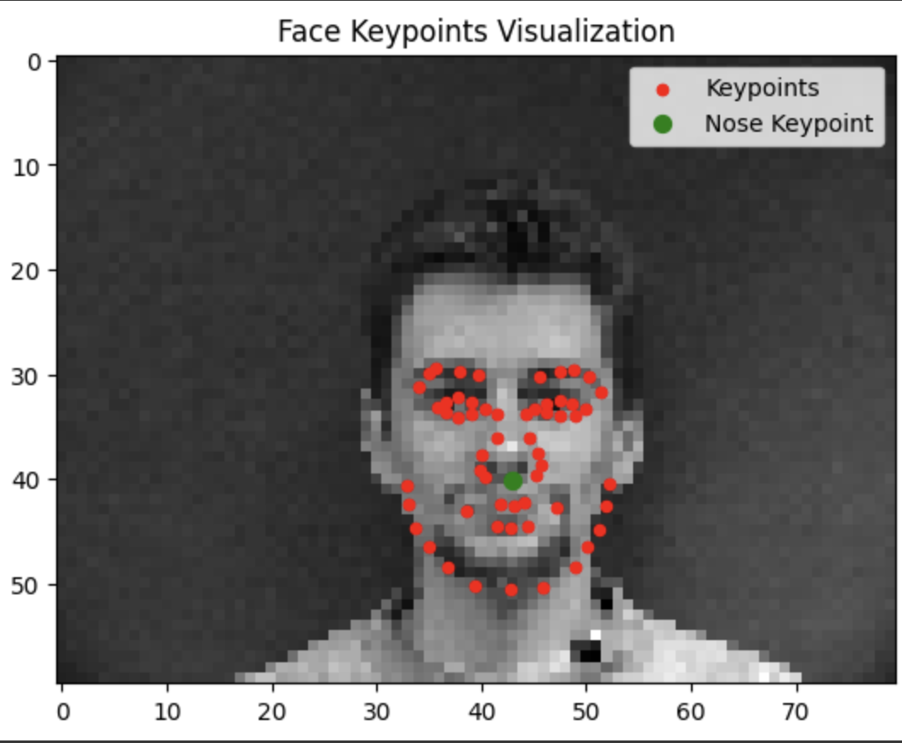

Course projects at UC Berkeley.

Aligning the color channels of glass-plate negatives from the 1900s.

Edge detection, sharpening, hybrid images, and multiresolution blending.

Correspondences, mid-way faces, morph sequences, and the mean face of a population.

Homographies, rectification, and feature matching for autostitching.

The forward process, classical and one-step denoising, and iterative sampling.

Depth refocusing and aperture adjustment from a lightfield array.

Convolutional networks for nose-tip and full facial keypoint detection.